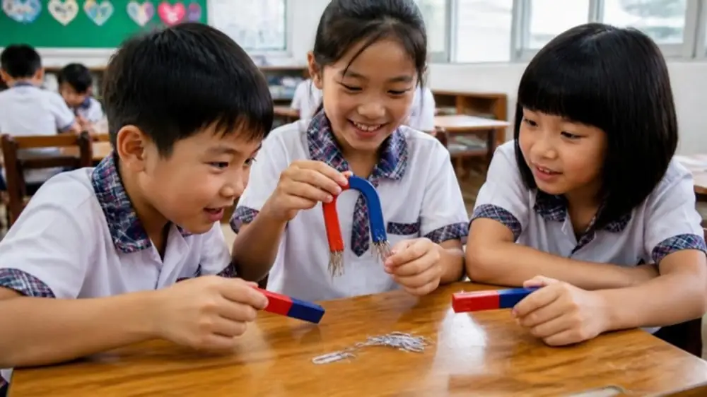
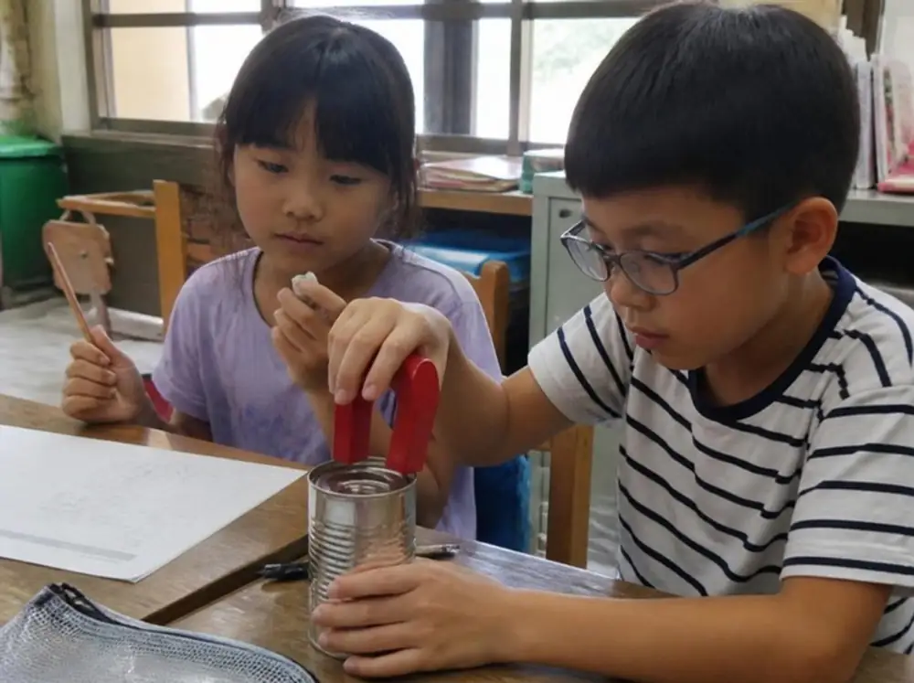
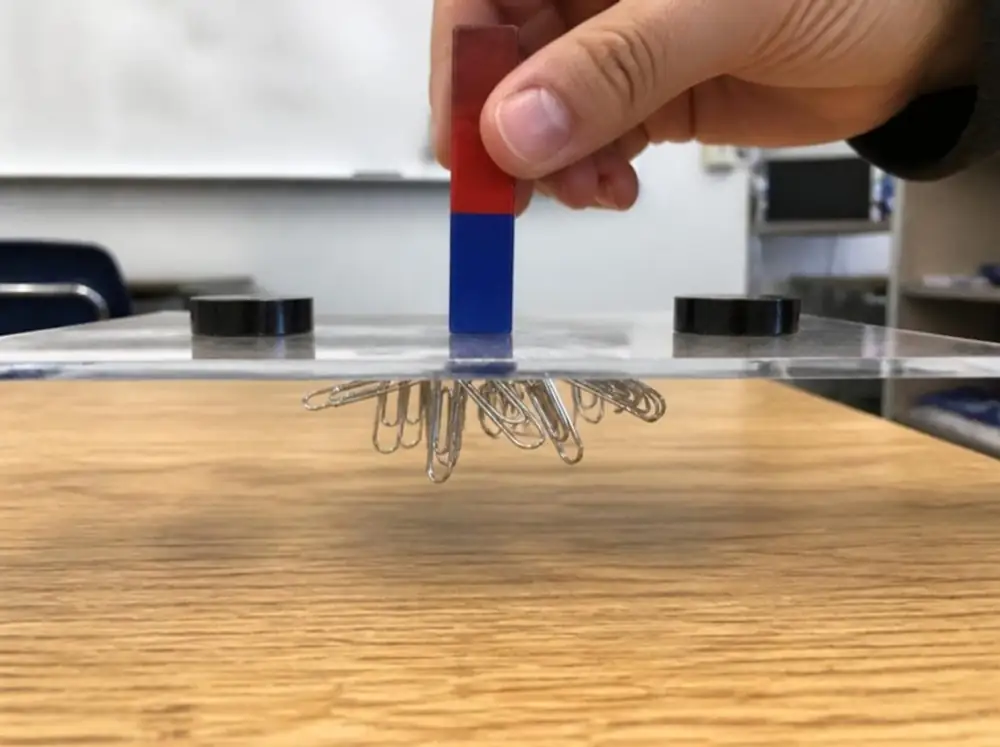
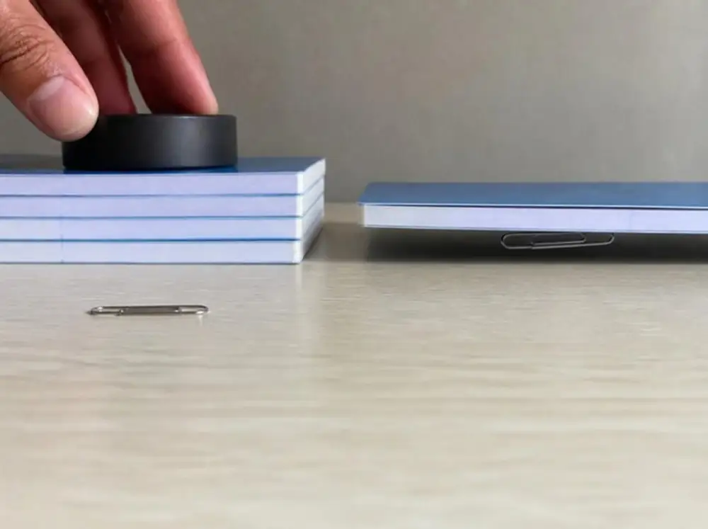
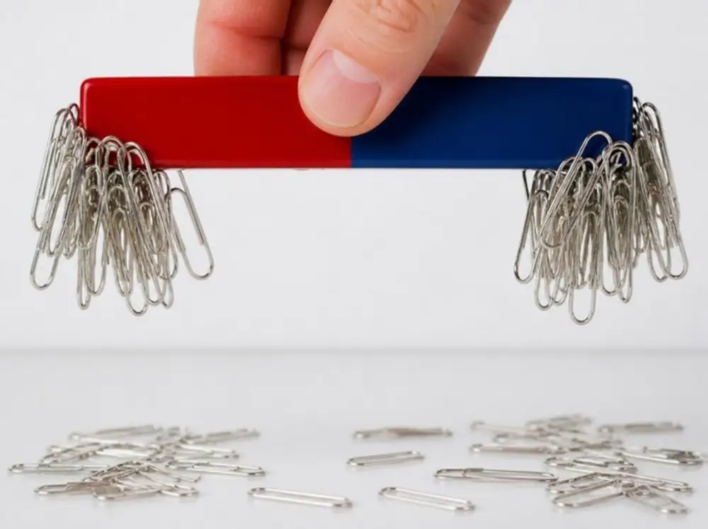
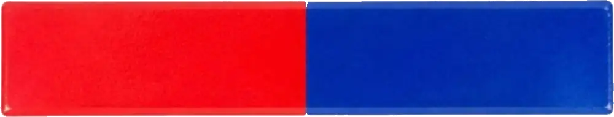
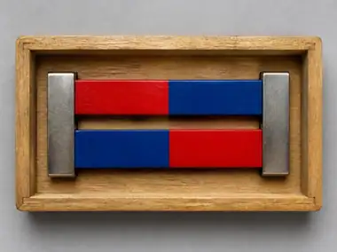
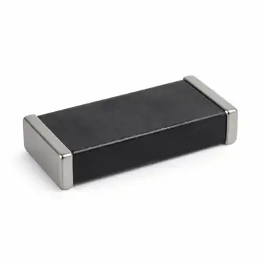
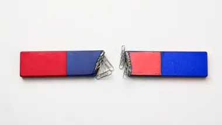
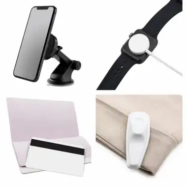

🧲 磁鐵好好玩三年級自然 ｜ 磁鐵單元（翰林・南一・康軒 三版整合）
每一課上方都有 ① ② ③ … 圓形按鈕，照順序點就能上課。照片上的數字點下去會放大；有動畫的地方按按鈕就會動。
紅色＝N 極／吸引
藍色＝S 極／排斥
紫色＝磁力線
磁鐵magnet磁力magnetic force磁極magnetic poleN 極north poleS 極south pole

每一課上方都有 ① ② ③ … 圓形按鈕，照順序點就能上課。照片上的數字點下去會放大；有動畫的地方按按鈕就會動。
磁鐵可以吸在冰箱門、白板、黑板上，卻不能吸在木頭櫃子和玻璃窗上。為什麼呢？先看看生活中的磁鐵，點照片放大：
妍妍玩磁鐵跳棋時發現：棋子吸得住鐵製棋盤，卻吸不住紙製棋盤。跟著她一步一步探究，依序點 1～7：
👀 觀察現象：磁鐵棋子吸得住鐵棋盤，吸不住紙棋盤。
❓ 提出問題：什麼材質的物品可以被磁鐵吸引呢？
📚 蒐集資料：磁鐵飛鏢吸在鏢靶上、磁鐵吸在冰箱門上——鏢靶和冰箱門都是鐵製品。
💡 提出假設：鐵製的物品可以被磁鐵吸引。
🔬 設計實作：準備各種材質的物品，用磁鐵一個一個試試看。
📊 分析驗證：把結果分成「會被吸」「不會被吸」兩堆。結果和假設不一樣時，要重新提出假設。
✅ 結論：磁鐵可以吸引鐵製品。
先讓學生猜（點「會／不會」），再點照片看答案：
硬幣、鋁罐也是金屬，為什麼不會被吸？
👆 點數字放大。
⚠️ 磁鐵吸的是鐵製品，不是所有金屬！資源回收時，可以用磁鐵把鐵罐和鋁罐分開。

磁鐵可以吸引鐵製品，這種吸引的力量就叫做磁力。
👁️ 磁力看不見，但可以從鐵製品被吸過來，知道磁力存在。
🪵 木頭、塑膠、紙、玻璃、橡皮擦、鋁罐、硬幣都不會被磁鐵吸引。
依各校段考常考的題型出題，點選答案馬上知道對錯：

磁鐵一定要碰到鐵製品才能吸住嗎？
👆 依序點按鈕。

每次多放一本習作，迴紋針還會被吸起來嗎？（南一版實驗）
👆 依序點按鈕，看照片變化。
紙張不會被磁鐵吸引，為什麼可以被磁鐵固定在白板上呢？
👆 點數字放大。
磁力隔著物品也有作用，所以很多產品把磁鐵包在裡面，又好用又美觀。
👆 點數字放大。
米歐變了什麼魔法，讓迴紋針飄在空中？（康軒・腦袋星球實驗室）
👆 點數字放大。
🧪 做法：①紙盒頂端內側黏圓形磁鐵 ②迴紋針綁棉線，另一端固定 ③把紙盒翻正，迴紋針就飄起來了！
依各校段考常考的題型出題，點選答案馬上知道對錯：

很多！ 很多！ 幾乎沒有拿長條形磁鐵靠近迴紋針，再拿起來，哪裡吸的迴紋針最多？
👆 依序點按鈕。
迴紋針常常把整根磁鐵包住，很難比較。怎麼辦？
📄 把透明片（或墊板）和磁鐵一起平放在迴紋針上再拿起，比較每個位置吸住的迴紋針數量。
📏 把迴紋針放在磁力測量圖上，把磁鐵平行推過去，看哪個位置最快吸到迴紋針。
🧲 鐵粉撒在紙上，下面放磁鐵：鐵粉在兩端最密，排成一條條磁力線。點照片上的數字看看！
馬蹄形（U 形）磁鐵的磁極在哪裡？
👆 點數字放大。
圓形磁鐵的磁極在哪裡？
👆 點數字放大。
🤔 想一想：為什麼長條形磁鐵常用兩端去吸東西，圓形磁鐵卻用兩個面？
→ 因為那裡是磁極，磁力最強！
磁鐵有很多形狀，每一種都有 N 極和 S 極。點照片看磁極在哪裡：
依各校段考常考的題型出題，點選答案馬上知道對錯：
把兩根長條形磁鐵的磁極靠近，會發生什麼事？先讓學生猜，再點按鈕：

👆 點 1～4。左邊磁鐵 A 不動，右邊磁鐵 B 慢慢靠近。
可以用手指拖曳旋轉、兩指縮放。
3D 模型載入後，依序點 1～4。
把環形磁鐵一個接一個套進吸管（筆），為什麼有的會飄起來？（南一・翰林 磁力套圈圈）
👆 點數字放大。
✅ 圓形、環形……不同形狀的磁鐵，也都有同極相斥、異極相吸的現象。
撿到一個沒有標示的黑色磁鐵，怎麼知道哪一端是 N 極？（南一 2-2）
❌ 不行！鐵製品靠近磁鐵的哪一極都會被吸，分不出 N、S。
🔴 拿已知的 N 極靠近貼標籤的一端 → 互相吸引。異極相吸，所以標籤端是 S 極。
🔵 再拿 S 極靠近標籤端 → 互相排斥。同極相斥，確定標籤端是 S 極！
🧲 磁鐵一定同時有 N 極和 S 極，所以另一端就是 N 極。
小南撿到一根斷掉的磁鐵，斷掉的地方還有磁力嗎？（南一・科學再探究）
👆 點數字放大。
✅ 斷口可以吸住迴紋針＝有磁力。每一段都變成一根新的磁鐵，各有 N 極和 S 極。
依各校段考常考的題型出題，點選答案馬上知道對錯：
門擋、櫃子門的磁鐵兩旁都加了鐵片。依序點照片看看：
在黑板畫一條水平線，用磁鐵把塑膠袋吸在線上，每次放一本一樣的書，直到磁鐵滑下來為止。
👆 先點「不加鐵片」一本一本放，再換「兩面加鐵片」。
把兩種方式的結果畫成長條，比一比（示範數據）：
不加鐵片
兩面加鐵片
✅ 在磁鐵兩旁各加一塊鐵片，吸引的力量會變強，可以掛更多東西。
如果只在一側加鐵片，效果一樣嗎？（翰林・課餘大挑戰）
| 加鐵片方式 | 能掛幾本書 |
|---|---|
| 不加鐵片 | 2 本 |
| A：一側加鐵片 | 3 本 |
| B：兩側加鐵片 | 5 本 |
✅ 只加一側，承載的書比較少；兩側都加，吸力最強。所以門擋、櫃子門都是兩側各加一片。
依各校段考常考的題型出題，點選答案馬上知道對錯：
磁鐵保存不當，磁力會慢慢變弱。看看這盒磁鐵怎麼收：
👆 點數字放大。
點照片翻過來，看看要注意什麼：

① 成對放兩個以上的磁鐵，不同極相吸、靠在一起放。

② 加鐵片只有一個磁鐵時，讓兩極吸在鐵片上。

③ 不摔不敲亂摔會讓磁力變弱，也可能斷掉。

④ 遠離卡片提款卡、存摺的磁條會被破壞。也不要讓磁鐵長期互相排斥。
依各校段考常考的題型出題，點選答案馬上知道對錯：
生活中哪些物品用了磁鐵？它們用了磁鐵的哪一種特性？點照片看：
不小心打翻一盒鐵粉，混在地上的沙土裡，怎麼快速清理？（康軒・磁鐵的妙用）
🧹 掃把會把沙土也一起掃起來，鐵粉和沙土分不開。
🧲 用磁鐵靠近，只有鐵粉會被吸起來，沙土留在地上——鐵粉和沙土就分離了！
🛍️ 磁鐵先包在塑膠袋裡：隔著塑膠袋也吸得到（磁力可以穿過物品），把磁鐵抽出來，鐵粉就掉下來，不會黏在磁鐵上。
生活中還有哪些問題可以用磁鐵解決？點按鈕看看小朋友的點子：
🪝 用繩子綁一塊磁鐵垂下去，就能把鐵釘釣上來。
📎 拿磁鐵在地上掃一圈，迴紋針一下子就全部吸起來。
♻️ 用磁鐵靠近，會被吸的是鐵罐，不會被吸的是鋁罐。
依各校段考常考的題型出題，點選答案馬上知道對錯：
最早的磁鐵不是人做出來的，而是在大自然裡發現的！古代中國人和希臘人發現一種黑色、堅硬的石頭，能吸引小鐵塊——就是磁鐵礦（也叫磁石、吸鐵石、鐵黑）。
👆 點數字放大。
點照片看看臺灣的磁鐵礦：
📍 大屯火山群、北部和西部海岸的海沙、花蓮和臺東的河沙、中央山脈，都找得到磁鐵礦。
現在常見的磁鐵大多是人造磁鐵，可以做成不同的形狀、大小和磁力強弱。
👆 點數字放大。
有些東西雖然感覺不到「吸力」，裡面也有磁鐵或磁條（康軒・科學閱讀；南一・磁鐵小幫手）：
科學閱讀常考「從文章找答案」，點選答案馬上知道對錯：
綜合各校段考題型，共 題。每題都有 📖 解析；答錯時會說明為什麼錯。